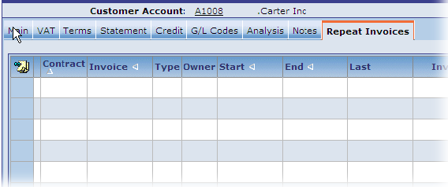
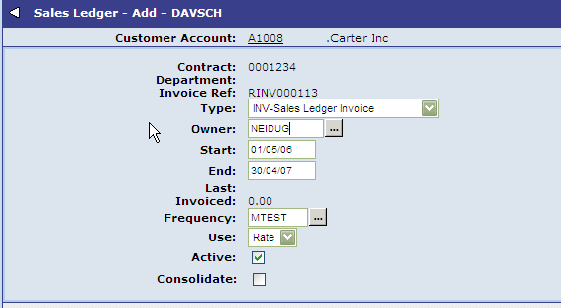
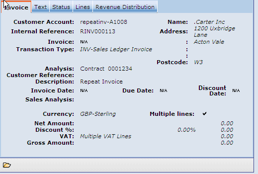
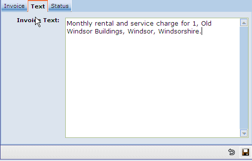
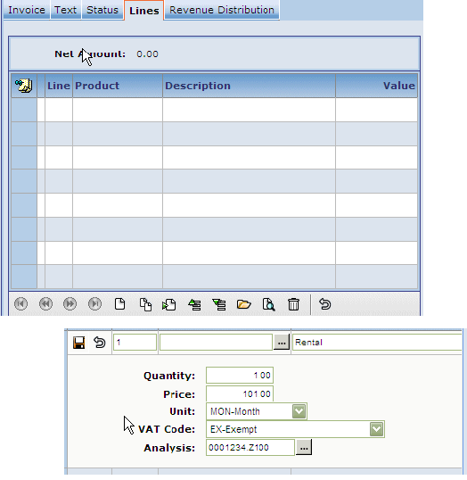
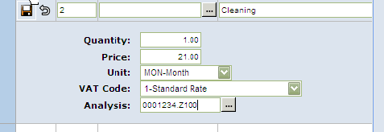
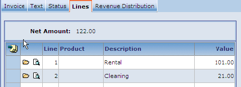
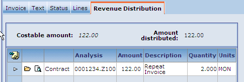
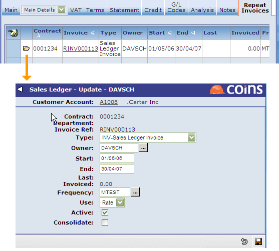

Repeat Invoices - Customer Maintenance
From V10.10 onwards, the Repeat Invoices tab is available in Customer Maintenance.

Adding a New Repeat Invoice
- Click Add on the Repeat Invoice tab.
- Choose Contract for contract invoices (as shown in the sample screen below) or Department for overhead invoices. (Department is configuration dependent.)
- Owner is a user. If that user has an email address, then the user will be emailed when the invoice is generated.
- Total means divide the total into equal portions.
- Rate means the same amount x the number of repeat invoices.
- Consolidate means that it will group together all invoices marked as consolidate for the same customer:contract:frequency:transaction type combination. It will appear as item details on each invoice (Not summarised to a single line total).

The recurrence type is now set up. Now we need to set up the values.
Text on the Invoice


When entering text, beware of its usage on consolidated invoices.
Adding Lines
Click Add to add lines.

Note that different units, prices, , and analys can be specified for each line.

Revenue distribution can be re-adjusted if required, in other words to something different to the Line by Line distribution.


Activating
Once you are happy with the repeat invoice, make it 'Active'.
- Click the Open icon.
- the Active box.
